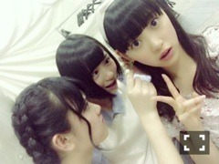

2014/0521Wed活発女子！！
最近すごく一眼レフカメラ欲しい！
写真ってずっと眺めていられるし！
色んな所に行って写真におさめたい
海とか木とか空とか人間とか。
でも上手く撮る自信無いなぁ
上手い人、本当に尊敬する...♡

全握はまりかさんとペアでした！
エンタメのグラビアコンビ☆☆
いつもまりかさんのほんわりした
雰囲気に癒されてます！
七瀬さんとまりかさんのダンスが
個人的に大好きなの〜
あ、遊びに行く所決めました
楽しみ！
あーー。
USJのハリーポッター！行きたい！
ハーマイオニーの格好したい♡
寝癖だとハーマイオニーに近いよ！
どなたか行きませんか( ˃̶̤ ·̫ ˂̶̤ )？

実家の私の部屋の机はアメリカン☆
でも東京の家はシンプルに
白で統一しているのでご安心を！笑
相変わらずベッドの周りには
ぬいぐるみが沢山あるけど...
この間のブログの
YUIさんの好きな曲リストに対して
皆さんから反響があって嬉しい！
デビュー時からずっと好きだし
永遠の憧れです。芯の強い所が好き。
あんなかっこいい人になりたいな！
何よりも歌が素敵...
乃木坂では
やさしさとは
ロマンティックいか焼き
サイコキネシスの可能性
失いたくないから
月の大きさが好きです！
皆さんのオススメの音楽
知りたいなあ
前の横浜個握の続き

4部
E-girlsの鷲尾伶菜さんの格好を
完全コピー٩(๑❛ᴗ❛๑)۶
推しメンです！ふふ
ワンピース、ヘアバンド、
イヤリング、ヒール、ベルト
バッグだけ純奈に借りました♡

純奈と日奈子が私の
イヤリング狙ってる
助けてくれ〜
5部
ツインテール。
れいかさん、永島さん
お誕生日おめでとうございます☆
れいかさんは真夏さんくらい
いじりがいのある先輩なの！笑
でも時々れいかさんにいじられるけど...
あんなに整った顔なのに面白い所とか
話しやすい雰囲気が凄く好きです！
FNS歌謡祭の時、ダンスがペアで
目を合わせる所のれいかさんの顔に
毎回爆笑してしまいすみませんでした
(つД`)ノ笑
れいかさんがメールで送ってくる
バナナの絵文字がれいかさんに
そっくりでこれまたツボ。
永島さんは同じ東海地方出身で
初期の頃からよく話しかけて
くださって！いつも明るいし面白いし
よく永島さんにいじられる私だけど
毎日元気貰ってます！
NOGIBINGO2で永島さんにドッキリ
を仕掛けて以来ぐんっと距離が
縮まった気がします٩(๑❛ᴗ❛๑)۶
私も慣れるとハイテンションな人
なのでもっとふざけあいたいな〜♡
本当におめでとうございます
そうそう、リハの合間に
ゆうりさんにキウイとパイナップル
あーんしてもらいました٩(๑❛ᴗ❛๑)۶
羨ましいでしょ！ふふ
あとね松村さんにカメラを向けられた
から満面の笑みでニコーってしたら
めっちゃアップに拡大されて
それが松村さんの待ち受けに
なりました...（；゜０゜）
ひいいい〜（；゜０゜）♡
質問返しめちゃめちゃ長め
5/10「mother's day」
◎No.1 みるきー＠世界で一番
乃木坂Loversさん
お疲れー
○ありがとう^o^
◎No.10 KEIさん
みおな〜
○ほい？？
◎No.100 こーたさん
多分 お寝坊さんしちゃう
かもしれないから...
お寝坊さんしたなって
思ったらあだ名付けてね♪また♪
ツチノコみたいな顔って言われたとき
びっくりして話そうとしてたことが
話せなくなっちゃって
ごめんちゃい(;＞_＜;)
(／。＼)
人(￣ω￣;)
(必死の土下座)
○寝坊したら塩対応しますね^o^
こちらこそいきなりごめんなさい
とっさに出てきた単語が
ツチノコでしたm(._.)m
5/13「9枚目」
◎No.1 シュトロハイムさん
ほっちゃん！
選抜おめでとう(#^.^#)
頑張って！
○ありがとう！
頑張ります！！！！！
◎No.3 学ランやろーさん
選抜おめでとー
これからも頑張って！！
○ありがとう！頑張ります！
◎No.13 ナイキ君さん
ずっと支える！
○ありがとうm(._.)m
頑張ります！！
◎No.130 ソーイチローさん
未央奈、選抜入りおめでとう(σ≧▽≦)σ
自分的には３列目に未央奈が
入ったことは全然悲しいこと
じゃなくて！！
今回は３列目だから、
後ろから踊っているメンバーが
見れていいよね！
って思ってる(*^_^*)！
そこから色んなことを勉強して、
またセンターに戻ってくる日を
楽しみに待ってます(≧▽≦)！！
○ありがとう^o^
皆さんにそう言ってもらえると
凄く安心します！
沢山学んでもっと成長できる
ように自分への悔しさをバネに
上だけをみて頑張ります
前進！！！
5/17「髪の色素」
◎No.1 あつろーさん
みおなー！
○あつろうそく(:ᘌꇤ⁐ꃳ 三
◎No.7 sota⊿さん
みおな尊敬してる！
○え！そんな、尊敬だなんて>_<
◎No.17 匿名さん
ほりちゃん♡かわいい♡
初コメです！
○いやいや>_<
コメントありがとうございます♪
◎No.170 ええちゃんさん
デブ屋本店行ってきたよーって
言ったおじさんです、又、
行きたいです 堀ちゃんと（笑）
○ありがとうございます^o^！
ええ〜(ヽ´ω`)
5/18「時差ボケしたい」
◎No.1 たむっちさん
みおなの魔女宅かわいかったよ♪
○違うよT^T
ラピュタのシータだよT^T
◎No.8 ナイキ君さん
だーいすき！
○ふふ( ˃̶̤ ·̫ ˂̶̤ )私も♡
◎No.18 せーの‼︎コーヘイ＼(^o^)／
さん
みおな( ❝̆ ·̫̮ ❝̆ )✧
○なに( ❝̆ ·̫̮ ❝̆ )✧
◎No.180 あおい♩.°さん
おやすみおな~~♡
って言いたいところだけど...
明後日からテストだから
今日はまだ寝れないな（´-`）.｡oO
○おやすみおな〜〜( ˃̶̤ ·̫ ˂̶̤ )？
あおいちゃん頑張って〜☆

いちごとトマトが特に好き
はあ。。夢の国に行きたい。
新しいカチューシャ欲しい。
ではでは
おやすみおな(ヽ´ω`)
2014/05/21 15:24
コメント(732)
試験期間中で毎日勉強強いられてるけど、プリンシパルの稽古に比べたら全然楽だからみおなだけじゃなくて俺も頑張るわ(´^o^｀)泣
プリンシパル楽しみにしてるねー♪
プリンシパル楽しみにしてるねー♪
みおなー(((o(*ﾟ▽ﾟ*)o)))
ほんとにほんとに偶然に私も試験終わったら一眼レフ買おうと思いました！笑
今日、雨上がりの庭を散歩してたらすごくきれいで思わず写真撮ったらいい感じで、もっといいカメラで撮りたいなあ！って（＾ω＾）
ワンピースかわいい♡どこのかなー？気になる！
ではでは！
今日、雨上がりの庭を散歩してたらすごくきれいで思わず写真撮ったらいい感じで、もっといいカメラで撮りたいなあ！って（＾ω＾）
ワンピースかわいい♡どこのかなー？気になる！
ではでは！
みおな〜お疲れ様♬
握手会楽し過ぎて
最後にお礼言うの忘れてしまった^_^;
だからコメントに残します。
ありがとう♬
時間を忘れてめっちゃ楽しかった。
また仕事頑張れる活力になったわ^ ^
幸せでした。
ホンマにありがとうm(_ _)m
USJ行きたい！行こう！
自分も行きた過ぎて
プレミア先行オープン応募してるから当たったら
行こう！笑
じゃあ未央奈ハーマイオニーな！
自分はポッターで行くわ（￣+ー￣）笑
乃木坂の好きな楽曲は
やさしさとは
走れ!Bicycle
ロマンスのスタート
でこぴん
失いたくないから
月の大きさが好き＼(^o^)／
毎日、稽古で大変やろうけど
体に気をつけて頑張ってね♬
月刊エンタメのオフショット素敵(*⁰▿⁰*)
万理華もみおなも綺麗な黒髪ロングうらやましいよー！
私はすぐに痛んじゃうの(´・ω・｀)ぬん
万理華もみおなも綺麗な黒髪ロングうらやましいよー！
私はすぐに痛んじゃうの(´・ω・｀)ぬん
未央奈ー!今日もお疲れ様！
未央奈の机オシャレ～
私の机今めっちゃ汚いよ～未央奈のと比べ物にならないくらい笑
鷲尾ちゃん！私も好き!!推しメン！かわいいよね～
鷲尾ちゃん完コピの未央奈もかわいいけどっ(*´ー｀*)
未央奈の机オシャレ～
私の机今めっちゃ汚いよ～未央奈のと比べ物にならないくらい笑
鷲尾ちゃん！私も好き!!推しメン！かわいいよね～
鷲尾ちゃん完コピの未央奈もかわいいけどっ(*´ー｀*)
テストが悪すぎてしにそうです。 助けてくださーい
みおな〜！
だいぶ一期と仲良くなったね！なんかすっごい嬉しい！(((o(*ﾟ▽ﾟ*)o)))
みおなの私服めっちゃ可愛い！
すっごい好きな服装だ！
一緒にハリーポッターのやつ行きたい！！！笑
またね〜♪( ´θ｀)ノ
だいぶ一期と仲良くなったね！なんかすっごい嬉しい！(((o(*ﾟ▽ﾟ*)o)))
みおなの私服めっちゃ可愛い！
すっごい好きな服装だ！
一緒にハリーポッターのやつ行きたい！！！笑
またね〜♪( ´θ｀)ノ
自分はUVERworldが好きなんで友達にうーばってあだ名つけられました（；^ω^）
Fight For Libertyを聴くとやる気が出るから特によく聴いてる♪
機会があったら聴いてみてね↑
この季節になったら遊園地行きたくなるよな〜
USJのハリポタ俺も行きたい！
俺は死の秘宝の英書の発売日に並ぶほどの熱狂的なハリポタファンだったんで余計に笑
USJ最近行ってないわ、学校から割と近いのに(⌒-⌒; )
これを機に行きます？？笑笑
ごめんなさい嘘です。
絢音ちゃんハリポタ好きそう〜
ではでは！
USJのハリポタ俺も行きたい！
俺は死の秘宝の英書の発売日に並ぶほどの熱狂的なハリポタファンだったんで余計に笑
USJ最近行ってないわ、学校から割と近いのに(⌒-⌒; )
これを機に行きます？？笑笑
ごめんなさい嘘です。
絢音ちゃんハリポタ好きそう〜
ではでは！
ほりちゃーん！！(o^^o)
今お仕事おわったよ！
ほりちゃんちの机かわいいー！(*^^*)
アメリのポスター？
私の部屋は、色んな物が貼ってある！壁に穴開けれないから、マスキングテープでペタペタ貼ってるよ〜アナグマのお面も飾ってあるよ〜(⌒▽⌒)
乃木坂のすきな歌は、
ぐるカー、希望、失いたくないから、バレッタ、吐息のメソッド、そんバカ、ロマイカ、涙ころ、、、
だめだみんな好きだwww
おすすめの曲いっぱいあるんだけど、長くなっちゃうから一曲に絞った！
タンポポの、I&YOU&I&YOU&I
可愛くてだいっっっすきなんだ！歌詞も絶妙！！
でもほりちゃんは知ってるかもしれないなあ(^○^)
また今度おすすめさせて！
かん
今お仕事おわったよ！
ほりちゃんちの机かわいいー！(*^^*)
アメリのポスター？
私の部屋は、色んな物が貼ってある！壁に穴開けれないから、マスキングテープでペタペタ貼ってるよ〜アナグマのお面も飾ってあるよ〜(⌒▽⌒)
乃木坂のすきな歌は、
ぐるカー、希望、失いたくないから、バレッタ、吐息のメソッド、そんバカ、ロマイカ、涙ころ、、、
だめだみんな好きだwww
おすすめの曲いっぱいあるんだけど、長くなっちゃうから一曲に絞った！
タンポポの、I&YOU&I&YOU&I
可愛くてだいっっっすきなんだ！歌詞も絶妙！！
でもほりちゃんは知ってるかもしれないなあ(^○^)
また今度おすすめさせて！
かん
俺はロマスタのイントロでほっちゃんが投げキッスするとこが大好きです(^｡^)
へへん
いちごもトマトも育ててるぜい、いちごは獲れたてを毎日食べてる、練乳＆チョコ
その代わりトマト達には釜じい並みにこきつかわれて、夏場は握手会なんて夢のまた夢・・・
いちごもトマトも育ててるぜい、いちごは獲れたてを毎日食べてる、練乳＆チョコ
その代わりトマト達には釜じい並みにこきつかわれて、夏場は握手会なんて夢のまた夢・・・
ユニバ来て〜♩
大阪きてよ〜♩
未央奈 大人っぽくて大好き∩ω･`⊂ ♡♡
未央奈との共通点 発見∩`･ω･∩！
トマト好き⤴︎⤴︎
おれの出席番号21番(￣▽￣)
オススメの曲はPhillip Phillips のgone,gone,gone
アメイジングスパイダーマン2の挿入歌（≧∇≦）
めっちゃいいよ(^_−)−☆
オススメの曲はPhillip Phillips のgone,gone,gone
アメイジングスパイダーマン2の挿入歌（≧∇≦）
めっちゃいいよ(^_−)−☆
おすすめ曲は、熊木杏里の一等星。関取花のむすめ。
堀ちゃん、こんばんわ。
今日も１日お疲れさまでした。
一眼レフカメラいいよね。
私も欲しい。
でも高いよね(>_<)
おっ、実家のマイ机はアメリカン仕様なんやね。すごく賑わってる机だね。
東京のシンプルなマイ机もまた見せてね。ギャップが見たいから。
次は堀ちゃんにいつ会えるのかな？しばらく会えないのかな。つかっちのこと忘
れないでね。
また会いに行きますね。
明日も１日元気に笑顔で
いきましょう(^o^)／
堀未央奈ちゃん推しの
つかっち
今日も１日お疲れさまでした。
一眼レフカメラいいよね。
私も欲しい。
でも高いよね(>_<)
おっ、実家のマイ机はアメリカン仕様なんやね。すごく賑わってる机だね。
東京のシンプルなマイ机もまた見せてね。ギャップが見たいから。
次は堀ちゃんにいつ会えるのかな？しばらく会えないのかな。つかっちのこと忘
れないでね。
また会いに行きますね。
明日も１日元気に笑顔で
いきましょう(^o^)／
堀未央奈ちゃん推しの
つかっち
全握、初めてだったけど
楽しかったです！
岐阜県最高＼(^o^)／♡
楽しかったです！
岐阜県最高＼(^o^)／♡
みおな可愛いー(^^)
ブログの画像見るたびに握手会行きたくなるー(>_<)
次は行けたら行くね！
ブログの画像見るたびに握手会行きたくなるー(>_<)
次は行けたら行くね！
いちご、私も好きやんね！
可愛いなぁ
私も見習うよ！\(//∇//)\
可愛いなぁ
私も見習うよ！\(//∇//)\
わたしも夢の国行きたい！！！！
りぃちゃん
♤long未央奈ちゃん(✿ฺ◨ฺㅂ◨✿ฺ)ﾉﾟこむばむはおばんだす（ ・ω・ ） Ξ´ ` ﾏﾕｹﾞﾎﾞｰﾝ❤
一眼レフcamera～カーキュリーさんが持ってるカナ？Σd⌒d(d＇∀＇)GOOD.+ﾟ☆
まりっかたんと一緒に(･∀･)ﾀﾞｰｯｼｭ=3遊びに行くの楽しみですねﾁｮｳﾀﾞｨ━━━(ﾉ´･∀･)ﾉ━━━!!!
ハーマイオニー未央奈ちゃんщ(ﾟдﾟщ)ｶﾓｰﾝ｡♥｡･ﾟ♡ﾟ･｡♥｡･ﾟ♡ﾟ･｡♥｡
乃木坂46⊿では♯なみころ♫が好きです(●´ω｀●)ゞ最近は塩ノ谷早耶香さん♯like a flower♫ 武藤彩未さん♯宙♫を聴いています( ･∀･)つ〃∩ ｶﾞｯﾃﾝｶﾞｯﾃﾝｶﾞｯﾃﾝ
Americanなお部屋ですねﾟ+.(ﾉ｡･ω･)ﾉ*.ｵｵｫｫ☆ﾟ･:*☆
bananaれかたんと仲が( ・∀・)ｲｲ!!んですねφ[・ω・｀*]ﾒﾓﾒﾓ♪
滝汗いらりんにいっぱい(((((っ－＿－)っカマってもらってるんですねヾ(lll´･ｪ･)ﾉたまげたっ!!
smile☺upの未央奈ちゃん見たいなぁ♬♩♫♪☻(●´∀｀●）☺♪♫♩♬
strawberrypowerでおやすみんしゃいにゃーっす！(ะ◕ฺㅈ◕ฺะ)ﾉ
ヾ(◕ 0 ◕ღ)ﾏ!!ヾ(◕ O ◕ღ)ﾀ!!ヾ(◕ ｡ ◕ღ)ﾈｰ
一眼レフcamera～カーキュリーさんが持ってるカナ？Σd⌒d(d＇∀＇)GOOD.+ﾟ☆
まりっかたんと一緒に(･∀･)ﾀﾞｰｯｼｭ=3遊びに行くの楽しみですねﾁｮｳﾀﾞｨ━━━(ﾉ´･∀･)ﾉ━━━!!!
ハーマイオニー未央奈ちゃんщ(ﾟдﾟщ)ｶﾓｰﾝ｡♥｡･ﾟ♡ﾟ･｡♥｡･ﾟ♡ﾟ･｡♥｡
乃木坂46⊿では♯なみころ♫が好きです(●´ω｀●)ゞ最近は塩ノ谷早耶香さん♯like a flower♫ 武藤彩未さん♯宙♫を聴いています( ･∀･)つ〃∩ ｶﾞｯﾃﾝｶﾞｯﾃﾝｶﾞｯﾃﾝ
Americanなお部屋ですねﾟ+.(ﾉ｡･ω･)ﾉ*.ｵｵｫｫ☆ﾟ･:*☆
bananaれかたんと仲が( ・∀・)ｲｲ!!んですねφ[・ω・｀*]ﾒﾓﾒﾓ♪
滝汗いらりんにいっぱい(((((っ－＿－)っカマってもらってるんですねヾ(lll´･ｪ･)ﾉたまげたっ!!
smile☺upの未央奈ちゃん見たいなぁ♬♩♫♪☻(●´∀｀●）☺♪♫♩♬
strawberrypowerでおやすみんしゃいにゃーっす！(ะ◕ฺㅈ◕ฺะ)ﾉ
ヾ(◕ 0 ◕ღ)ﾏ!!ヾ(◕ O ◕ღ)ﾀ!!ヾ(◕ ｡ ◕ღ)ﾈｰ
乃木どこのグロい話をしてる時の未央奈ちゃんが超おもろかった！！
今度握手会で語ってほしいわ笑
おやすみおな^ ^
今度握手会で語ってほしいわ笑
おやすみおな^ ^
謎の美少女 堀 未央奈
ほ、堀ちゃん伶菜ちゃん好きなんですか！？
俺も伶菜ちゃん大好きです(((o(*ﾟ▽ﾟ*)o)))♡
俺乃木坂とE-girlsが大好きなんです♡♡
今度の握手会堀ちゃんとその話もしたいな〜♪♪♪
早く握手会行きたい！！！！楽しみ！！！！
俺も伶菜ちゃん大好きです(((o(*ﾟ▽ﾟ*)o)))♡
俺乃木坂とE-girlsが大好きなんです♡♡
今度の握手会堀ちゃんとその話もしたいな〜♪♪♪
早く握手会行きたい！！！！楽しみ！！！！
トマト大好きな友達が多すぎて
いつもトマトの取り合いです笑
今度友達と夢の国に行ってきます(((o(*ﾟ▽ﾟ*)o)))
明日もお仕事頑張ってください～！
いつもトマトの取り合いです笑
今度友達と夢の国に行ってきます(((o(*ﾟ▽ﾟ*)o)))
明日もお仕事頑張ってください～！
みおなちゃん！かわいいよ～♪
握手会行くね！！だいすきです(*^_^*)
握手会行くね！！だいすきです(*^_^*)
みおなちゃん、おはようございます。
お仕事お疲れ様です。
プリンシパル公演開幕まで、10日を切りましたね。
レッスンの方は順調でしょうか？
カメラ楽しいですよ。最近カメラ女子をあちこちで見かけますね。上手い下手とか関係なく、自分の感性で撮る方が良いですよ。YUKIも一眼レフカメラ持ってますが、次から次新しいレンズが欲しくて困ります（笑）、
みおなちゃんは、クラッシックカメラが似合う気がする。（笑）
まりっかとのグラビア本当に良かった。また機会が有ることを願ってます。
YUKI
お仕事お疲れ様です。
プリンシパル公演開幕まで、10日を切りましたね。
レッスンの方は順調でしょうか？
カメラ楽しいですよ。最近カメラ女子をあちこちで見かけますね。上手い下手とか関係なく、自分の感性で撮る方が良いですよ。YUKIも一眼レフカメラ持ってますが、次から次新しいレンズが欲しくて困ります（笑）、
みおなちゃんは、クラッシックカメラが似合う気がする。（笑）
まりっかとのグラビア本当に良かった。また機会が有ることを願ってます。
YUKI
こんばんはー！堀ちゃん！
今日は冷たい雨と風が吹いていたね！
ツインテールめっちゃかわいい！！！
堀ちゃんの質問に答える！
好きな曲は
第１位バレッタ
第２位ぐるぐるカーテン
第３位君の名は希望
です！！
ではでは
今日はちょっと寒いので風邪を引かないように気をつけてね！！
今日は冷たい雨と風が吹いていたね！
ツインテールめっちゃかわいい！！！
堀ちゃんの質問に答える！
好きな曲は
第１位バレッタ
第２位ぐるぐるカーテン
第３位君の名は希望
です！！
ではでは
今日はちょっと寒いので風邪を引かないように気をつけてね！！
うふふふー
あーあ、会いに行きたいな(´・_・`)
初コメかな？？
鷲尾ちゃん私も好きだよっ‼︎‼︎
借りたのって…全部…？？じゃないよね？笑笑笑
苺私もすき(＾0＾*
春の苺って美味しいよね〜！
鷲尾ちゃん私も好きだよっ‼︎‼︎
借りたのって…全部…？？じゃないよね？笑笑笑
苺私もすき(＾0＾*
春の苺って美味しいよね〜！
バレッタが大好きー
未央奈頑張れ!!
未央奈頑張れ!!
夢の国！
うちも行きたーい！
楽しいよねー
あ、うちの名前バターロールぱんまんになってるけど、これガチで呼ばれるwwww
え…い、いや幼稚園児じゃないからな！
ってかアンパンマン見てる子って幼稚園児以下？いや、そんなことないはず…←
つか私、中学生…(´・ω・`)
うちも行きたーい！
楽しいよねー
あ、うちの名前バターロールぱんまんになってるけど、これガチで呼ばれるwwww
え…い、いや幼稚園児じゃないからな！
ってかアンパンマン見てる子って幼稚園児以下？いや、そんなことないはず…←
つか私、中学生…(´・ω・`)
みおなー！
YUI俺もめっちゃ大好きで全曲歌えるぜ（笑）
カラオケでよく歌うよー！
ライブもYUIと乃木坂しか行ったことがない（笑）
YUI俺もめっちゃ大好きで全曲歌えるぜ（笑）
カラオケでよく歌うよー！
ライブもYUIと乃木坂しか行ったことがない（笑）
みおなの気持ちすごく分かるよ‼︎苺とトマトが好きって♡だって、毎日寝る前にはトマト食べるもん♡
みおなと、好きな物があうなんて少しビックリ❗️
みおなと、好きな物があうなんて少しビックリ❗️
みおなめっちゃ可愛いぞー！！
私服姿を早く見てみたい(^o^)
初コメです！
未央奈ちゃんの写真にいつも癒されてます(*´ω｀*)
おすすめの音楽はROVOかな。宇宙っぽいロックで気持ちいいよ～♪
未央奈ちゃんの写真にいつも癒されてます(*´ω｀*)
おすすめの音楽はROVOかな。宇宙っぽいロックで気持ちいいよ～♪
鷲尾伶菜さんだー(ू ੭•͈ω•͈)੭
E-girlsとFLOWER好きです(((o(*ﾟ▽ﾟ*)o)))
E-girlsとFLOWER好きです(((o(*ﾟ▽ﾟ*)o)))
こんばんはー
横浜の個別の格好可愛すぎる！
ツインテールなんて最高！笑
おやすみおな～！
横浜の個別の格好可愛すぎる！
ツインテールなんて最高！笑
おやすみおな～！
ブログ更新嬉しいです！
読んでると本当に元気になれる気がします
坂屋にとって未央奈ちゃんはもうなくてはならない存在なのです(((o(*ﾟ▽ﾟ*)o)))
読んでると本当に元気になれる気がします
坂屋にとって未央奈ちゃんはもうなくてはならない存在なのです(((o(*ﾟ▽ﾟ*)o)))
こんばんみおな～♪ヽ(´▽｀)/
優里にあーんされるとか裏山～ヽ(´o｀;
俺もされて～(´∇｀)
みおなは玲香をいじるのかー
俺も握手行ったときにギャグやってーって言うんだけどねー、なかなかしてくれへんのよ～ヽ(´o｀;
何か言ってやって！笑
P.S.みおなに叫ばれた「NAVY」は「ナビー」じゃなくて「ネイビー」らしいよ♪笑
優里にあーんされるとか裏山～ヽ(´o｀;
俺もされて～(´∇｀)
みおなは玲香をいじるのかー
俺も握手行ったときにギャグやってーって言うんだけどねー、なかなかしてくれへんのよ～ヽ(´o｀;
何か言ってやって！笑
P.S.みおなに叫ばれた「NAVY」は「ナビー」じゃなくて「ネイビー」らしいよ♪笑
みおなちゃんお疲れ！
一眼レフカメラいいよねぇ～、、私もすごくほしい。でも自分の眼！が一番の高級カメラってことを忘れちゃだめだよ♪このデジタルな世界で、「心」に残すってのもなかなかいいね(^^)v
一眼レフカメラいいよねぇ～、、私もすごくほしい。でも自分の眼！が一番の高級カメラってことを忘れちゃだめだよ♪このデジタルな世界で、「心」に残すってのもなかなかいいね(^^)v
USJ行きたい！
未央奈の奢りで連れてって(^_^)/
１０回くらいで覚えてくれるって本当？
もうそらくらいは行った気がするけどあまり覚えられてる気がしない(^-^;)
未央奈の奢りで連れてって(^_^)/
１０回くらいで覚えてくれるって本当？
もうそらくらいは行った気がするけどあまり覚えられてる気がしない(^-^;)
俺のオススメの歌はone directionのwhat makes you
beautifulですヾ(＠⌒ー⌒＠)ノ
あと、俺もYUIさんの歌が好きでよく聞いていて、一番好きな歌は good bye days です
よかったら、探してみてね〜( ´ ▽ ` )ﾉ
beautifulですヾ(＠⌒ー⌒＠)ノ
あと、俺もYUIさんの歌が好きでよく聞いていて、一番好きな歌は good bye days です
よかったら、探してみてね〜( ´ ▽ ` )ﾉ
えー堀ちゃんと一緒にユニバ行きたーい(￣▽￣)
うち甲子園住んでるからユニバはけっこう近いねんでー笑 堀ちゃんと行きたいよー笑
最近、堀ちゃん可愛すぎる♡
写真保存しまくってるで笑
ってか実家の家すごいなー(￣▽￣)
うち甲子園住んでるからユニバはけっこう近いねんでー笑 堀ちゃんと行きたいよー笑
最近、堀ちゃん可愛すぎる♡
写真保存しまくってるで笑
ってか実家の家すごいなー(￣▽￣)
堀ちゃん、お疲れさま♪
「E-girlsの鷲尾伶菜」って言うよりは「Flowerの鷲尾伶菜」と言ったほうが正しいかと(^0^)
自分も鷲尾伶菜が大好きです。
伶菜ちゃんが1人で歌っている『let go again feat.VERBAL（m-flo）』なんて、300回以上は聴いているかと…(^_^;)
乃木どこ、見たよ。
でら面白かった♪
グロテスクなの好きなんだね。
自分も「バイオハザード」は好きで、全DVD持っています(^0^)/
「E-girlsの鷲尾伶菜」って言うよりは「Flowerの鷲尾伶菜」と言ったほうが正しいかと(^0^)
自分も鷲尾伶菜が大好きです。
伶菜ちゃんが1人で歌っている『let go again feat.VERBAL（m-flo）』なんて、300回以上は聴いているかと…(^_^;)
乃木どこ、見たよ。
でら面白かった♪
グロテスクなの好きなんだね。
自分も「バイオハザード」は好きで、全DVD持っています(^0^)/
こーただぉ
みおな～♪
塩対応したらおれ泣いちゃうからね…
(。´Д⊂)
大好きだぉ～(σ*´∀｀)(照)
みおな～♪
塩対応したらおれ泣いちゃうからね…
(。´Д⊂)
大好きだぉ～(σ*´∀｀)(照)
こんばんは！
純奈のバッグ派手ー！
てかほんと仲良いよね！
羨ましいくらい←
一眼レフはかずみさんに
コツ教わるといいようん(笑)
ハリーポッター行きたいよね！
大阪住んでるからいつでも
行けるーにやにや←
自分は逆にディズニー行きたい(笑)
YUI自分も好き！
映画のタイヨウのうた感動したし
うーん、最近だとmiwaさん
好きかな！
明るい曲もたくさんあるから
聴いてみて！
他は嵐とか良いんじゃないかな！
じゃ、また！
純奈のバッグ派手ー！
てかほんと仲良いよね！
羨ましいくらい←
一眼レフはかずみさんに
コツ教わるといいようん(笑)
ハリーポッター行きたいよね！
大阪住んでるからいつでも
行けるーにやにや←
自分は逆にディズニー行きたい(笑)
YUI自分も好き！
映画のタイヨウのうた感動したし
うーん、最近だとmiwaさん
好きかな！
明るい曲もたくさんあるから
聴いてみて！
他は嵐とか良いんじゃないかな！
じゃ、また！
おすすめの曲かぁ
乃木坂46って知ってます？(笑)
僕的に
「そんなバカな・・・」
っていう曲が好きですね、はい。
着信音にしてます。
最近はそれぐらいしか聞いてないです(笑)
強いて言うなら
1Ｄの「Live while we're young」やな！
ノリノリやし(笑)
今日はコメント返しされますよーに(>_<)
乃木坂46って知ってます？(笑)
僕的に
「そんなバカな・・・」
っていう曲が好きですね、はい。
着信音にしてます。
最近はそれぐらいしか聞いてないです(笑)
強いて言うなら
1Ｄの「Live while we're young」やな！
ノリノリやし(笑)
今日はコメント返しされますよーに(>_<)


握手会もお疲れ！！本当にいつもお疲れ！！
これからもよろしくね！！ずっとずっと応援してるから！！ ちなみに僕もトマト大好きです(//∇//)